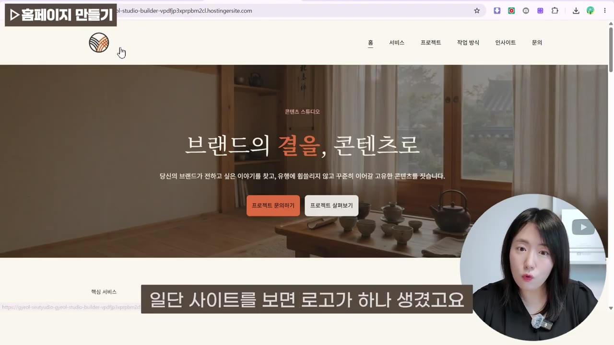
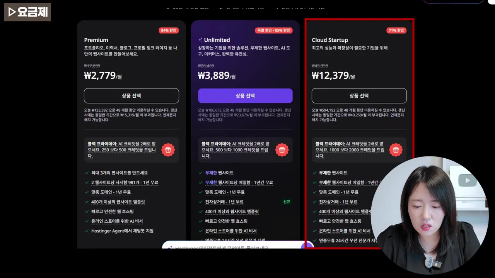
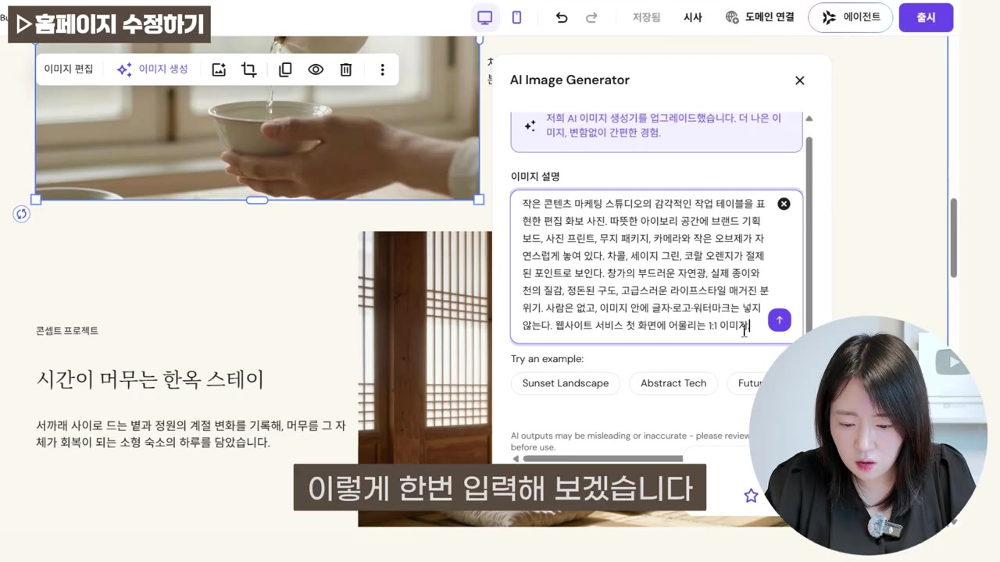
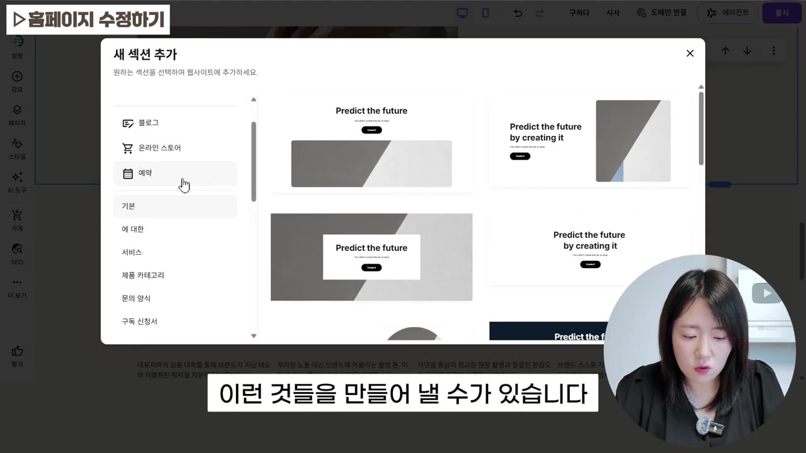
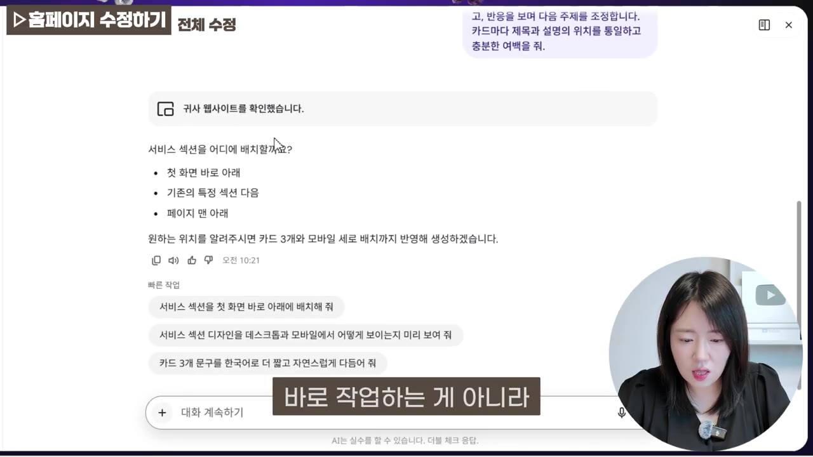
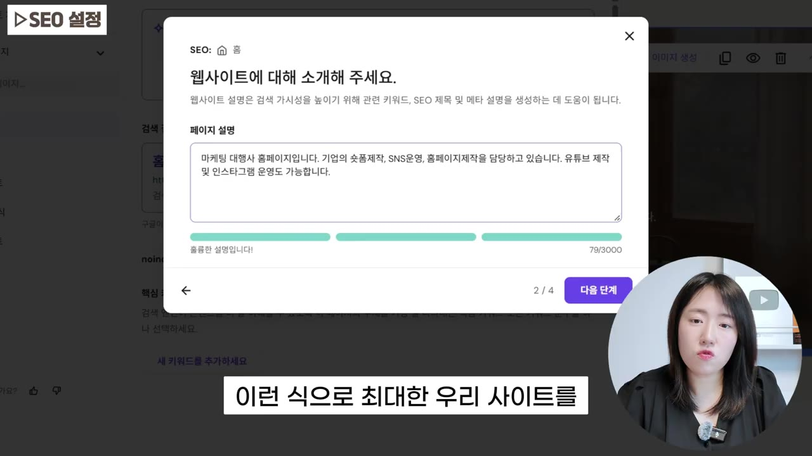
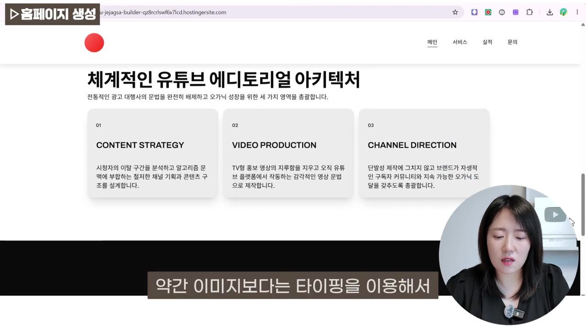
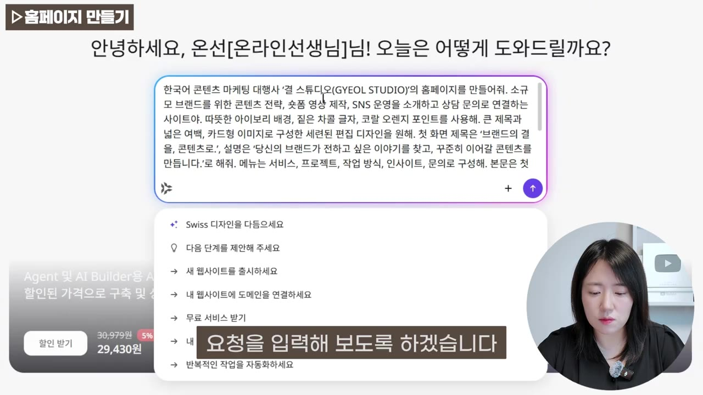

AI로 내 사업 홈페이지 만들기 | 호스팅어로 디자인 수정부터 도메인 연결까지
▶ 원본 영상 보기한눈에 보기
- 호스팅어(Hostinger) AI 빌더에 원하는 사이트를 채팅으로 설명하면 약 3분 만에 여러 페이지짜리 홈페이지가 만들어진다.
- 수정은 두 가지 방식이다: 글자·이미지·섹션을 직접 고치는 수동(매뉴얼) 모드, 채팅으로 요청하는 에이전트 방식.
- 이미지 생성, 섹션 추가·삭제·복제, 로고 교체, PC 수정의 모바일 자동 반영까지 코딩 없이 가능하다.
- 출시(게시) 후 도메인 연결, AI SEO 어시스턴트, 스토어·블로그·예약·비즈니스 이메일 같은 부가 기능도 한 곳에서 설정한다.
- 요금제는 개인용 프리미엄·언리미티드·스타트업으로 나뉘고, 표시 금액은 48개월 기준이다.
이런 분께 도움이 됩니다
- 업체에 맡기지 않고 사업·포트폴리오·강의 소개용 홈페이지를 직접 만들고 싶은 초보자.
- AI 빌더로 초안을 빠르게 만든 뒤 세부만 손보고 싶은 분.
핵심 내용
호스팅어 AI 빌더가 하는 일
- 홈페이지 제작에 더해 호스팅, 결제(판매), 이메일 마케팅, SEO 설정까지 한 서비스에서 처리한다. 강의나 온라인 상품 판매 사이트도 가능하다. (0:34)
- 원하는 사이트를 채팅으로 요청하면 바로 만들지 않고 "생성하고 싶은 게 맞는지" 먼저 확인한다. 맞으면 확인, 수정이 필요하면 거절을 누른다. (2:14)
- 진행자는 스튜디오 이름 '결'과 색감·제목을 입력했고, 약 2~3분 만에 결과가 나왔다. (2:48)
- 이름 분위기에 맞춘 로고, 카피라이팅("고유한 콘텐츠를 짓습니다"), 핵심 서비스, 컨셉 프로젝트, 협업 과정까지 AI가 구성했다.
- 원페이지가 아니라 서비스 클릭 시 별도 페이지로 넘어가는 다중 페이지 구조로 생성됐다.
💡 구성을 몰라도 사진·문구·배치 고민을 AI가 대신해 초안이 바로 나온다.

요금제
- 개인 기준 프리미엄·언리미티드·스타트업으로 구분된다. (1:03)
- 표시된 금액은 48개월 기준이며, 1개월·1년·2년·4년 중 기간에 따라 가격이 달라진다.
- 영상 시점(블랙프라이데이)에는 크레딧이 더 많이 들어간다. 기본 사용은 프리미엄·언리미티드, 많이 쓰면 상위 단계를 권한다.

수정 방식 두 가지
- 에이전트(채팅) 방식: 채팅으로 계속 요청한다. 완전 초보에게 편하다. (5:27)
- 매뉴얼(수동) 모드: 요소를 눌러 하나하나 직접 고친다. 사이트를 한두 번 만들어 본 사람에게 유용하다.
수동 모드 조작
- 텍스트: 요소 선택 → 텍스트 편집 → 드래그해서 스타일·색 변경, 위치 이동(이동 시 정렬 가이드가 보임). 번역(예: 영어로 변경)도 바로 반영. (6:00)
- PC 화면에서 바꾼 내용은 모바일에 자동 연동되며, PC/모바일 미리보기 전환이 가능하다. (6:32)
- 이미지: 이미지 선택 → 이미지 생성(프롬프트 입력 후 생성, 'Use this image'로 적용) 또는 이미지 편집(업로드해 교체). 크기는 기본값 유지를 권한다. (7:03)

- 섹션: 섹션 추가로 블로그·온라인 스토어·동영상·디자인 템플릿을 넣을 수 있다. 배경 선택 후 삭제, 복제도 가능하다.

- 로고: 로고를 눌러 교체하고 크기를 조정한다.
채팅으로 섹션 통째로 요청하기
- "서비스 섹션을 만들어 줘"처럼 제목·구조·카드 구성(콘텐츠 전략, 숏폼 제작, SNS 운영 등)을 적어 요청한다. (9:10)
- 에이전트가 사이트를 확인한 뒤 "어디에 배치할까요?"라고 되묻고, 진행자는 '첫 화면 바로 아래'를 지정했다. 확인을 누르면 요청대로(카드 제목·설명 위치 통일, 여백 정리) 반영된다.
- 마음에 드는 다른 사이트의 일부를 캡처해 플러스(+) 버튼으로 첨부하고 "이렇게 만들어 줘"라고 할 수도 있다. (10:19)

출시·도메인
- '출시'를 누르면 외부에서 볼 수 있는 사이트가 된다. (10:19)
- 처음엔 호스팅어 제공 도메인으로 연결되고, 영상은 1년 무료라고 한다. 이미 가진 도메인은 '도메인 연결'로 붙인다. (10:51)
SEO 설정
- SEO는 외부 검색에서 내 사이트가 발견되게 하는 기능이다. 페이지별로 설정할 수 있다. (11:12)
- AI SEO 어시스턴트: 사이트 소개를 자세히 입력(최대 3문장 정도, 자막상 "3선자") → 키워드 설정 → 결과 확인 → '마치다'. 소개 작성이 어려우면 GPT에게 SEO 문구를 부탁해도 된다.
💡 업체에 맡기면 별도 비용을 받는 SEO 설정을 직접 할 수 있다.

그 밖의 기능
- 사이트 전체 스타일 수정, AI 도구, 로고 제작기. (12:15)
- 가게(스토어) 추가: 상품은 물론 서비스도 판매 가능하다. 처음에 쇼핑몰로 만들지 않았어도 나중에 추가할 수 있다. (12:25)
- 더보기 메뉴에서 블로그·예약 등 설정. (12:59)
- 관리자 페이지 왼쪽에 채팅별로 만든 사이트가 모두 모여, 여러 사이트를 만드는 사람에게 유리하다. 도메인과 유료 결제 시 비즈니스 이메일(Gmail·네이버가 아닌 자기 도메인 메일)도 같은 곳에서 쓴다.
- 다른 예시로 유튜브 제작사 사이트(이미지보다 타이핑 중심)를 만들었고, 어색한 로고는 로고 제작기로 다시 만들 수 있다고 한다.

따라 해보기
준비물
- 호스팅어 계정과 유료 요금제(영상 설명란 링크 hostinger.com/ONSEON, 결제 시 쿠폰 ONSEON으로 10% 할인 — 광고성 제휴 링크이므로 직접 비교 후 결정).
- 소요 시간: 영상 기준 초안 약 3분, 전체 수정은 사이트마다 다름.
단계별 방법
🔁 홈페이지 만들기 순서
- 요금제 선택
- 요청 입력
- 생성 확인
- 결과 점검
- 내용 수정
- SEO 설정
- 출시·도메인
- 1요금제 선택
개인용 요금제와 기간을 고르고 가입한다. (1:03)
- 2요청 입력
첫 화면 입력창에 사이트 이름·색감·제목·구성을 적고 보낸다. (1:42)

첫 화면 입력창에 사이트 요청 내용을 적은 모습 · ▶ 2:10 - 3생성 확인
에이전트가 되묻는 내용을 읽고 확인을 누른다. (2:14)
- 4결과 점검
약 3분 뒤 나온 사이트를 훑어본다.
- 5내용 수정
수동 모드로 글자·이미지·섹션을 고치거나 채팅으로 요청한다.
- 모바일 미리보기로 PC 수정이 반영됐는지 본다.
- 6SEO 설정
AI SEO 어시스턴트로 소개·키워드를 넣는다.
- 7출시·도메인
출시를 누르고 기본 도메인 또는 내 도메인을 연결한다.
2단계에 입력할 내용: 프롬프트 원문은 영상 설명란에 넣어 둔다고 했으나 설명란에는 없음 → 사이트 이름, 업종, 원하는 색감, 메인 제목, 넣을 섹션을 직접 적는다 (보충).
따라 할 수 있는지 점검
- ✅ 바로 따라 할 수 있음: 수동 모드 편집(텍스트·이미지·섹션·로고), 채팅 섹션 요청, SEO 어시스턴트 흐름.
- ⚠️ 1단계 「요금제 선택」: 정확한 가격·플랜별 차이(크레딧 양 등)가 영상에 안 나옴 → 공식 사이트 요금 페이지 확인.
- ⚠️ 2단계 「요청 입력」: 입력한 프롬프트 원문이 화면에서 읽히지 않고 설명란에도 없음 → 영상 2:14 화면 참고 후 직접 작성 (보충).
- ⚠️ 7단계 「출시·도메인」: 기본 도메인 1년 무료의 조건(요금제별 여부)과 도메인 연결 방법(DNS 설정 등)은 자세히 안 나옴 → 호스팅어 도움말에서 '도메인 연결' 검색.
- ⚠️ 문의 폼 추가·문의 수신 테스트, 모바일 상세 수정은 설명란에 있으나 자막에는 나오지 않음 → 영상에서 확인되지 않음.
- ❓ 크레딧 소진 시 AI 요청이 제한되는지(영상은 "크레딧이 더 많이 들어간다"만 언급).
확인 방법
- 출시 후 기본 도메인 주소로 접속해 PC·모바일 양쪽에서 화면이 정상으로 보이는지 확인한다.
막히면
- 마음에 안 드는 요소는 선택 후 삭제하거나, 채팅에서 거절을 눌러 다시 요청한다.
- 이미지 크기는 기본값 유지가 무난하다고 영상이 권한다.
기억할 숫자·인용
- 초안 생성 약 2~3분, "10분 만에 나만의 홈페이지".
- 요금제 가격은 48개월 기준 표시.
- 기본 도메인 1년 무료(영상 주장).
- "홈페이지를 업체에 맡겨 만드는 시대는 지났다"는 취지의 발언(0:34).
생각해볼 점
- 영상 설명란에 제휴 할인 링크가 있어 호스팅어에 우호적인 소개일 수 있다. 다른 빌더(Wix·Framer 등)와 비교해 볼 만하다.
- 48개월 기준 가격은 갱신 시 요금이 달라질 수 있다 — 갱신 가격 확인이 필요하다 (영상 외 의견).
- AI가 쓴 프로젝트·서비스 문구는 임의 내용이므로 실제 사업 정보로 반드시 교체해야 한다.
바로 해볼 일
- 만들고 싶은 사이트의 이름·업종·색감·넣을 섹션을 5줄로 적어 둔다.
- 호스팅어 요금제 페이지에서 기간별 실제 가격과 갱신 가격을 확인한다.
- 마음에 드는 사이트 한 곳을 캡처해 두고, 에이전트에 참고 이미지로 첨부해 볼 준비를 한다.